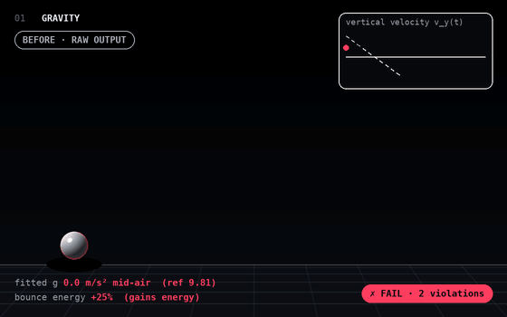
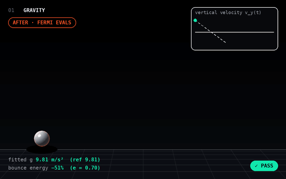
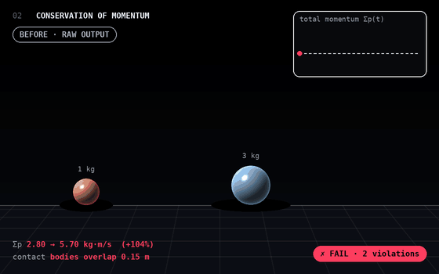
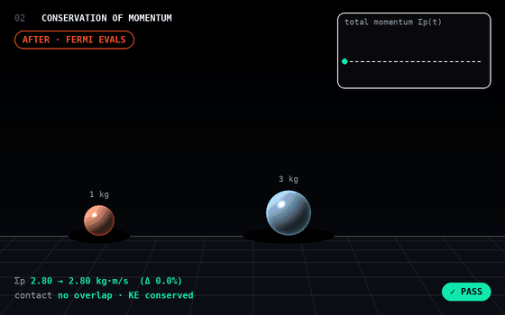
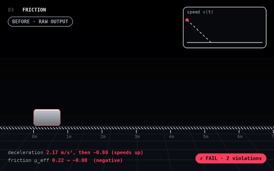
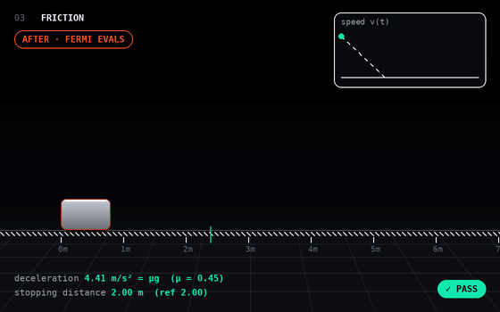

Physics tests
Each test runs a clip through a Fermi physics eval. On the left, raw output and the violations the eval flags. On the right, the same scene once the evals are applied.
Illustrative renders. The “before” clips reproduce common failure modes of video-generation models; the “after” clips follow the exact physical solution. Each frame shows the quantity the eval measures.
Gravity ay = −g
Fits a parabola to the airborne segments of every trajectory and checks the recovered acceleration against g = 9.81 m/s², and that no bounce adds energy.

- Fitted g is 0.0 m/s² while airborne: the ball hovers
- Bounce gains 25% energy

- Fitted g is 9.81 m/s²: parabolic flight
- Each bounce loses 51% energy (restitution 0.70)
Conservation of momentum Σp = const
Tracks each body’s mass and velocity through a collision and checks that total momentum is unchanged and that the bodies never pass into each other.

- Total momentum jumps 2.80 → 5.70 kg·m/s (+104%)
- Bodies overlap 0.15 m at contact

- Total momentum stays 2.80 kg·m/s (Δ 0.0%)
- Clean contact; the light ball rebounds at −1.40 m/s
Friction |a| = μg
Measures how a sliding object slows down: deceleration must be constant at μg, the object must stop, and it must never speed up without a force.

- Block speeds up with no force acting
- Effective friction goes negative (μ 0.22 → −0.08)

- Constant deceleration 4.41 m/s² = μg (μ 0.45)
- Stops after 2.00 m, matching v₀² / 2μg